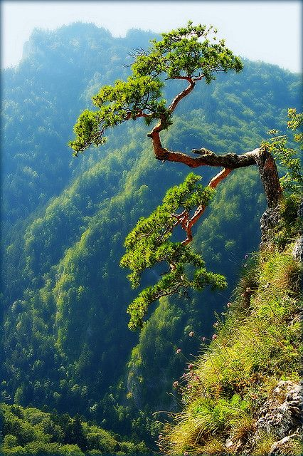
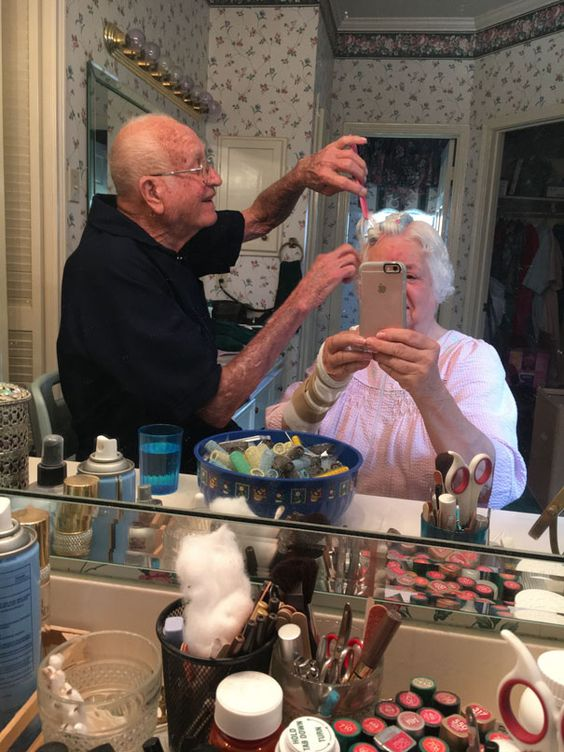

세계에서 가장인기 있는 애완동물하면 개와 고양이가 있습니다.
그 중 고양이는 적어도 1만년 동안 사람과 연을 맺고 있는 애완동물인데요.
고양이는 개에 비해서 그 종이 다양하지 않는 만 공식적으로 인정된 고양이 품종은 약 50종이라고 합니다.
그 중에서 가장 독특한 외모를 가진 고양이들을 보도록 하겠습니다.
독특해도 여전히 사랑스럽다는 것은 의심의 여지가 없겠죠?
- 일본 밥테일

일본과 동남아시아에서 가장 기괴한 고양이 품종 중 하나입니다.
토끼처럼 생긴 퍼프 꼬리를 가지고 태었났으며 일본에서 수세기 동안 잘알려져 있고 매우 인기가 있습니다.
그로인해 전통 민속 과 예술에 자주 등장합니다.
가장 큰 특징은 이름에서 처럼 짧은 코리인데 이꼬리가 코르크마개 모양으로 구부러져 더 짧아 보이기는 하지만 길이가 4인치 정도 된다고 합니다.
- 카오마니

더 알아보기!
카오마니 고양이는 하얀보석을 뜻하는 태국어로, 서로 다른 눈동자와 보석같은 눈을 가졌습니다.
짧고 매끄럽고 촘촘한 순백색의 털을 가지고 있으며 파란 눈,금색 눈, 서로 다른 색을 가진 눈동자 가진 녀석들이 있으며사람들은 서로다른 색을 가진눈(오드아이)를 많이 선호합니다.
활동적이며 총명합니다. 때때로 다이몬드 아이라고 불리기도 합니다.
- 페르시아 고양이

더 알아보기!
페르시아고양이는 몸집이 중간 보다 더 큰 고양이로 몸의 균형이 잘 잡혀 있으며 얼굴에는 사랑스런 표정을 가지고 있습니다.
크고 둥근 머리,작은 귀, 비교적 짧은 꼬리를 가지고 있으며 원래 짧은 주동이를 가지고 있었느나 지금은 납작한 주둥이를 가지고 있습니다.
- 우크라이나 레브코이

우크라이나 레브코이는 개 얼굴 생김새의 고양이로 귀는 안쪽으로 접혀 있고 머리카락은 거의 없습니다.
어떤 면에서 스핑크스와 비슷한 모습을 하고 있고 몸이 길며 근육질이며 날씬합니다.
또한 부드럽고 탄력있는 피부를 가지고 있으며 주름이 과다한 모습을 하고 있을 때도 있습니다.
2004년 1월에 공식 표본 등록이 되어 있어 그 역사는 길지 않습니다.
스코틀랜드 폴드메티스 수컷과 털이 없는 던스코이 암컷을 교배함으로서 생겨나게 되었답니다.
- 먼치킨

더 알아보기!
먼치킨은 매우 짧은 다리,긴 몸을 가진 중간 크기의 고양이로 호두 모양의 눈과 삼각형의 귀를 특징으로 하는 새로운 종의 고양이 입니다.
일반 가정 고양이와 비슷한 특징을 가지고 있고 상냥하고,장난기가 많으며 사람지향,외향적 성격이며,똑똑합니다.
먼치킨은 여러가지 색깔과 온갖 무늬를 자랑하며 짧은 다리라 해서 다리기와 뛰기 능력이 떨어진다고 생각하면 오산입니다.
- 스핑크스

더 알아보기
스핑크스 즉 캐나다산 헤어리스도 잘 알려진 엽기 고양이입니다.
털 없이 태어난 고양이 품종으로 사람에 따라 매력적이거나 이국적 또는 무서워 보일수 도 있습니다.
스핑크스의 털은 미세한 고서머로 덮여 있어 그섬세함 때문에 스핑크스의 피부는 따뜻한 스웨이드와 비슷하다고 합니다.
이 품종의 또 다른 특징은 주름입니다. 주름이 엄청나게 많습니다.
돌아가기

올해 12살이 된 명수! 새로운 가족이 생겼다고 합니다.
소중한 친구가 생긴 명수의 이야기를 우리 같이 들어볼까요?
| 인터뷰 |
답변 |
| 간단한 자기소개 부탁해요S2 |
안녕하세요. 무도초등학교에 다니는 12살 명수입니다.
최근에 코리안숏헤어 고양이와 가족이 됐어요. 잘 부탁드립니다.

|
| 그렇군요. 정말 좋겠어요~ 고양이를 독자분들께 소개시켜드릴까요? |
(쑥스러운 듯 웃으며) 이름은 '인자'고요. 성은 '이'예요. 저희 엄마가 지어주셨어요.
길 고양이었어서 나이는 모르는데 의사쌤 말씀으로는 2살 정도된 것 같대요.
얼룩 무늬가 예쁜 우리 인자랑 오래오래 건강히 같이 있으면 좋겠어요.
|
| 원래도 고양이를 좋아했는지 궁금해요. |
아뇨. 인자는 집에 한 번 들어와서 나가지 않아서 키우게 된 거예요.
그래도 이젠 좋아요
|
| 끝으로 이루고 싶은 꿈이 있으면 말해줄래요? |

꿈은 없고요. 인자랑 평생 놀고 싶어요.
|
돌아가기